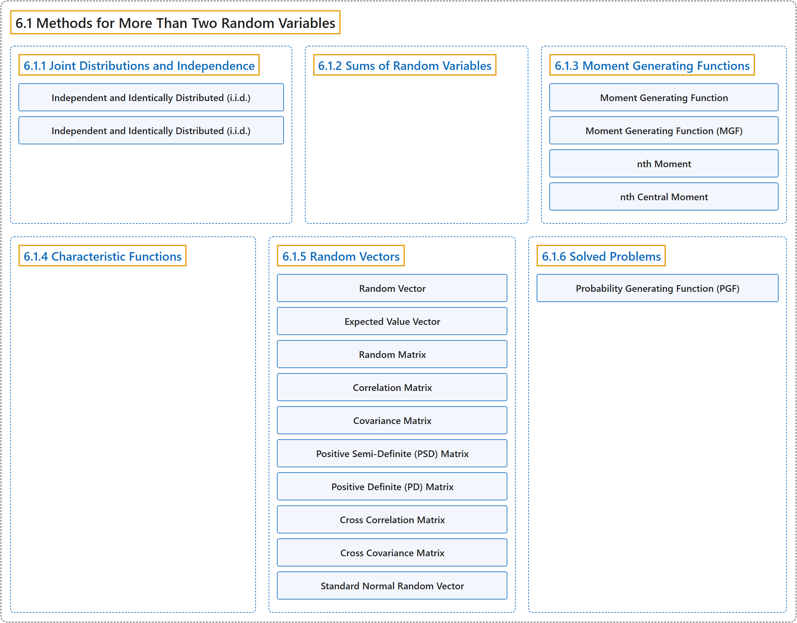

6.1 Methods for More Than Two Random Variables
Classification

Glossary
| Term | Definition | 中文翻译 | Source |
|---|---|---|---|
| 6.1 Methods for More Than Two Random Variables 多于两个随机变量的方法 |
(No definition) | （无定义） | Pishro-Nik, 2014, section 6.1 |
| 6.1.1 Joint Distributions and Independence 联合分布与独立性 |
(No definition) | （无定义） | Pishro-Nik, 2014, section 6.1.1 |
| Independent and Identically Distributed (i.i.d.) 独立同分布 |
"Random variables \(X_1\), \(X_2\),..., \(X_n\) are said to be independent and identically distributed (i.i.d.) if they are independent, and they have the same marginal distributions:" | 若随机变量 \(X_1\), \(X_2\),..., \(X_n\) 相互独立且具有相同的边缘分布，则称它们独立同分布（i.i.d.）： | Pishro-Nik, 2014, section 6.1.1 |
| Independent and Identically Distributed (i.i.d.) 独立同分布 |
"Random variables \(X_1\), \(X_2\),..., \(X_n\) are said to be independent and identically distributed (i.i.d.) if they are independent, and they have the same marginal distributions: \(\begin{align} \nonumber F_{X_1}(x)=F_{X_2}(x)=...=F_{X_n}(x), \textrm{ for all }x \in \mathbb{R}. \end{align}\)" | 若随机变量 \(X_1\)、\(X_2\)、...、\(X_n\) 相互独立且具有相同的边缘分布 \(\begin{align} \nonumber F_{X_1}(x)=F_{X_2}(x)=...=F_{X_n}(x), \textrm{ for all }x \in \mathbb{R}. \end{align}\)，则称它们独立同分布（i.i.d.） | Pishro-Nik, 2014, section 6.1.1 |
| 6.1.2 Sums of Random Variables 随机变量之和 |
(No definition) | （无定义） | Pishro-Nik, 2014, section 6.1.2 |
| 6.1.3 Moment Generating Functions 矩母函数 |
(No definition) | （无定义） | Pishro-Nik, 2014, section 6.1.3 |
| Moment Generating Function 矩母函数 |
"The moment generating function (MGF) of a random variable \(X\) is a function \(M_X(s)\) defined as \(\begin{align} \nonumber M_X(s)=E\left[e^{sX}\right]. \end{align}\)" | 随机变量 \(X\) 的矩母函数（MGF）是定义为 \(\begin{align} \nonumber M_X(s)=E\left[e^{sX}\right]. \end{align}\) 的函数 \(M_X(s)\) | Pishro-Nik, 2014, section 6.1.3 |
| Moment Generating Function (MGF) 矩母函数 |
"The moment generating function (MGF) of a random variable \(X\) is a function \(M_X(s)\) defined as" | 随机变量 \(X\) 的矩母函数（MGF）是定义为如下形式的函数 \(M_X(s)\) | Pishro-Nik, 2014, section 6.1.3 |
| nth Moment n 阶矩 |
"The n th moment of a random variable \(X\) is defined to be \(E[X^n]\)." | 随机变量 \(X\) 的 n 阶矩定义为 \(E[X^n]\)。 | Pishro-Nik, 2014, section 6.1.3 |
| nth Central Moment n 阶中心矩 |
"The n th central moment of \(X\) is defined to be \(E[(X-EX)^n]\)." | \(X\) 的 n 阶中心矩定义为 \(E[(X-EX)^n]\)。 | Pishro-Nik, 2014, section 6.1.3 |
| 6.1.4 Characteristic Functions 特征函数 |
(No definition) | （无定义） | Pishro-Nik, 2014, section 6.1.4 |
| 6.1.5 Random Vectors 随机向量 |
(No definition) | （无定义） | Pishro-Nik, 2014, section 6.1.5 |
| Random Vector 随机向量 |
"We call \(\textbf{X}\) a random vector." | 我们称 \(\textbf{X}\) 为随机向量。 | Pishro-Nik, 2014, section 6.1.5 |
| Expected Value Vector 期望向量（均值向量） |
"The expected value vector or the mean vector of the random vector X is defined as \(\begin{align} \nonumber E\mathbf{X} = \begin{bmatrix} EX_1 \\ EX_2 \\. \\[-10pt]. \\[-10pt]. \\[5pt] EX_n \end{bmatrix}. \end{align}\)" | 随机向量 X 的期望向量或均值向量定义为 \(\begin{align} \nonumber E\mathbf{X} = \begin{bmatrix} EX_1 \\ EX_2 \\. \\[-10pt]. \\[-10pt]. \\[5pt] EX_n \end{bmatrix}. \end{align}\) | Pishro-Nik, 2014, section 6.1.5 |
| Random Matrix 随机矩阵 |
"Similarly, a random matrix is a matrix whose elements are random variables." | 类似地，随机矩阵是其元素为随机变量的矩阵。 | Pishro-Nik, 2014, section 6.1.5 |
| Correlation Matrix 相关矩阵 |
"For a random vector \(\mathbf{X}\), we define the correlation matrix, \(\mathbf{R_X}\), as" | 对于随机向量 \(\mathbf{X}\)，我们将相关矩阵 \(\mathbf{R_X}\) 定义为 | Pishro-Nik, 2014, section 6.1.5 |
| Covariance Matrix 协方差矩阵 |
"The covariance matrix, \(C_X\), is" | 协方差矩阵 \(C_X\) 为 | Pishro-Nik, 2014, section 6.1.5 |
| Positive Semi-Definite (PSD) Matrix 半正定矩阵 |
"Remember from linear algebra that a symmetric matrix M is positive semi-definite (PSD) if, for all vectors b, we have \(\begin{align} \mathbf{b^T M b} \geq 0. \end{align}\)" | 回顾线性代数，若对所有向量 b 都有 \(\begin{align} \mathbf{b^T M b} \geq 0. \end{align}\)，则对称矩阵 M 是半正定（PSD）的 | Pishro-Nik, 2014, section 6.1.5 |
| Positive Definite (PD) Matrix 正定矩阵 |
"Also, M is said to be positive definite (PD), if for all vectors b \(\neq 0\), we have \(\begin{align} \mathbf{b^T M b} > 0. \end{align}\)" | 此外，若对所有向量 b \(\neq 0\)，都有 \(\begin{align} \mathbf{b^T M b} > 0. \end{align}\)，则称 M 是正定（PD）的 | Pishro-Nik, 2014, section 6.1.5 |
| Cross Correlation Matrix 互相关矩阵 |
"Finally, if we have two random vectors, \(\mathbf{X}\) and \(\mathbf{Y}\), we can define the cross correlation matrix of \(\mathbf{X}\) and \(\mathbf{Y}\) as \(\begin{align} \nonumber \mathbf{R_{XY}=E[X Y^T]}. \end{align}\)" | 最后，若有两个随机向量 \(\mathbf{X}\) 和 \(\mathbf{Y}\)，我们可以将 \(\mathbf{X}\) 和 \(\mathbf{Y}\) 的互相关矩阵定义为 \(\begin{align} \nonumber \mathbf{R_{XY}=E[X Y^T]}. \end{align}\) | Pishro-Nik, 2014, section 6.1.5 |
| Cross Covariance Matrix 互协方差矩阵 |
"Also, the cross covariance matrix of X and Y is \(\begin{align} \nonumber \mathbf{C_{XY}=E[(X-EX)(Y-EY)^T]}. \end{align}\)" | 此外，X 与 Y 的互协方差矩阵为 \(\begin{align} \nonumber \mathbf{C_{XY}=E[(X-EX)(Y-EY)^T]}. \end{align}\) | Pishro-Nik, 2014, section 6.1.5 |
| Standard Normal Random Vector 标准正态随机向量 |
"Let's call such a random vector the standard normal random vector." | 我们称这样的随机向量为标准正态随机向量。 | Pishro-Nik, 2014, section 6.1.5 |
| 6.1.6 Solved Problems 例题详解 |
(No definition) | （无定义） | Pishro-Nik, 2014, section 6.1.6 |
| Probability Generating Function (PGF) 概率母函数 |
"For these random variables it is usually more useful to work with probability generating functions (PGF)s defined as \(\begin{align} G_X(z)=E[z^X]=\sum_{n=0}^{\infty} P(X=n)z^n, \end{align}\) for all \(z \in \mathbb{R}\) that \(G_X(z)\) is finite." | 对于这些随机变量，通常使用概率母函数（PGF）更为有用，其定义为 \(\begin{align} G_X(z)=E[z^X]=\sum_{n=0}^{\infty} P(X=n)z^n, \end{align}\)，对所有使 \(G_X(z)\) 有限的 \(z \in \mathbb{R}\) 成立。 | Pishro-Nik, 2014, section 6.1.6 |
References
Pishro-Nik, H. (2014). Introduction to probability, statistics, and random processes. Kappa Research. Retrieved October 28, 2026, from https://www.probabilitycourse.com/